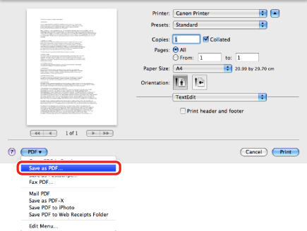
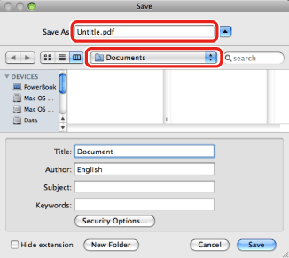

Saving a Document in PDF Format
As an alternative to printing on paper, you can save your document as a PDF file.
1.
From the application software, open the document you want to save as a PDF (Portable Document Format) file.
2.
From the [File] menu, select [Print].
The [Print] dialog box is displayed.
3.
In any of the panes under the [Print] dialog box, select [Save as PDF] from [PDF].

You can select other options for handling the file as a PDF.
The [Save] dialog box is displayed.
4.
Specify the file name and save location in the [Save] dialog box.

5.
Click [Save].
The document is saved as a PDF file.